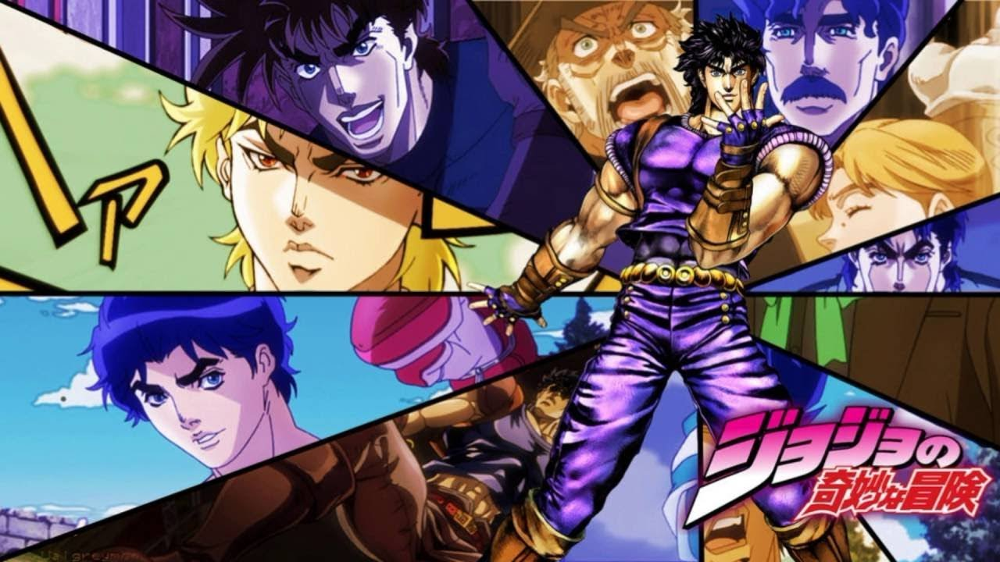

About JoJo's Bizarre Adventure
JoJo's Bizarre Adventure is a Japanese manga series (and also, more recently, an anime series) written and illustrated by Hirohiko Araki. It was originally serialized in Shueisha's Weekly Shōnen Jump magazine from 1987 to 2004, and was transferred to the monthly seinen magazine Ultra Jump in 2005.
The manga is split up into eight story arcs, with each arc following a new protagonist bearing the "JoJo" nickname.
What Makes JoJo so Popular
JoJo is well known for its iconic art style and character poses, frequent references to Western music and fashion, and often over the top battles (especially when stands are introduced later on!). The series has sold over 100 million copies in print to date, making it one of the best-selling manga series in history. It has spawned many a popular media franchise including one-shot manga, light novels, and video games.
The manga, TV anime, and live-action film are licensed in North America by Viz Media, which has produced various English releases of the series since 2005.